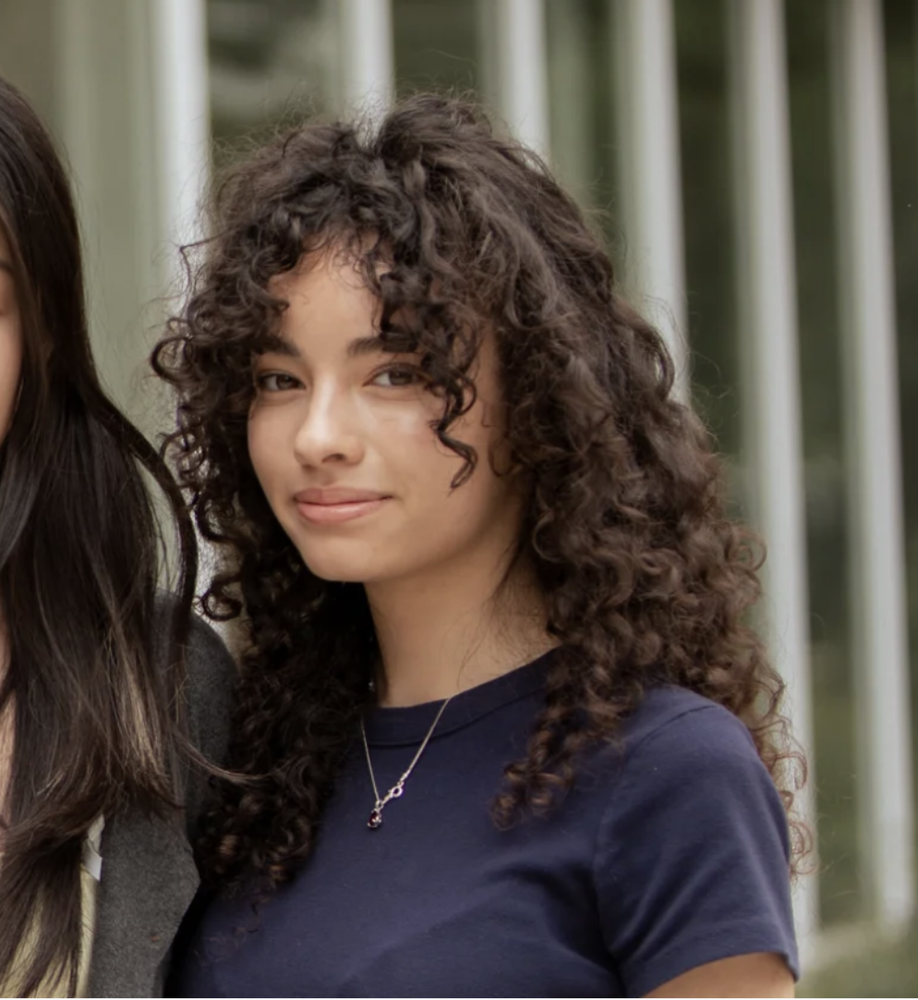
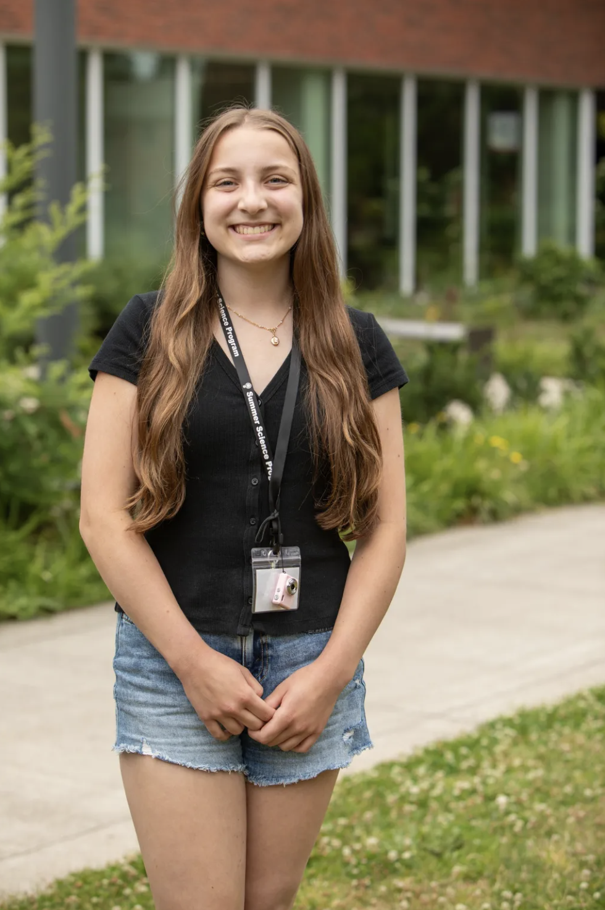
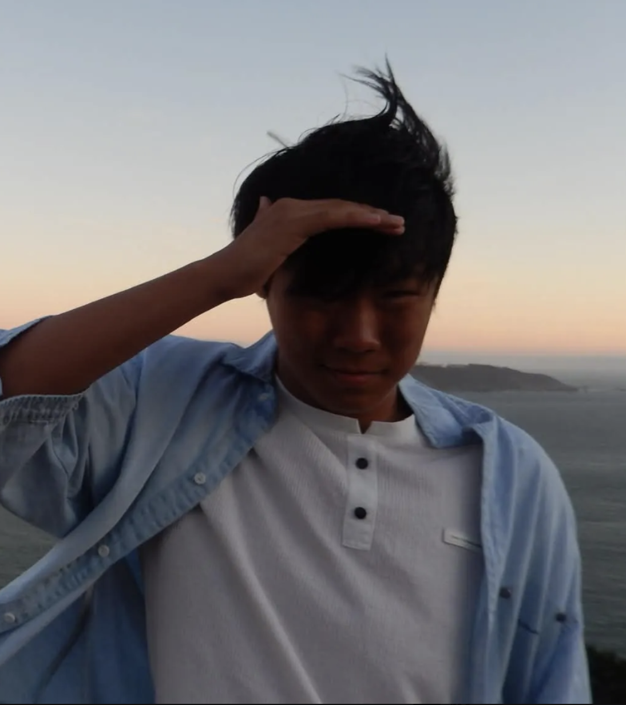
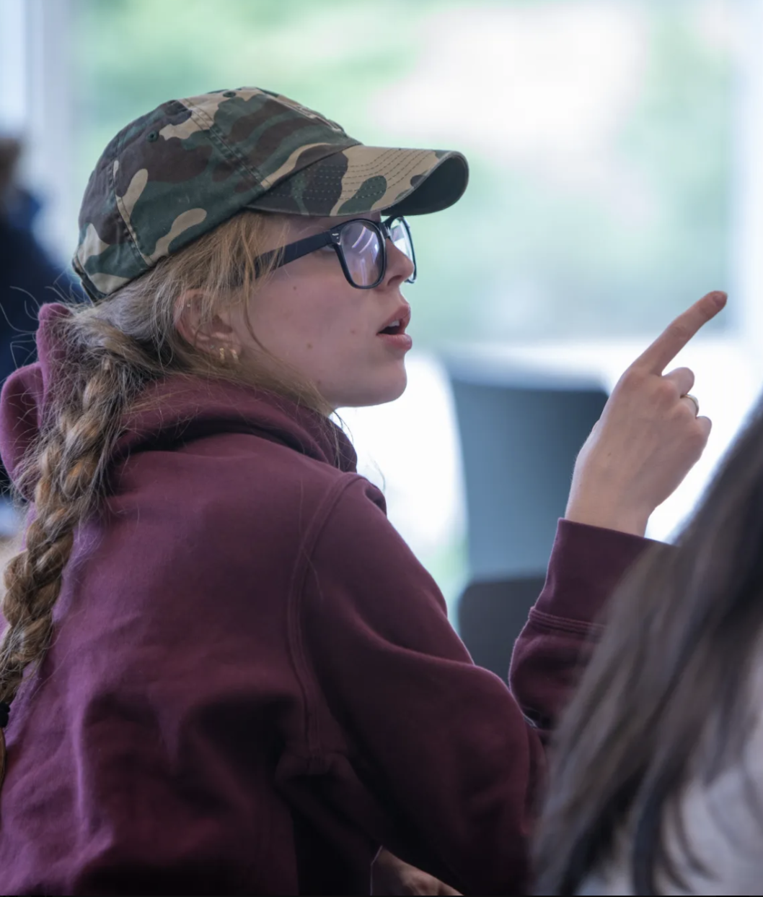

Our Team

Renata Begin,
Founder
Renata is a high school student from Salt Lake City, Utah, who loves space and environmental science. Aside from Lights Out for Youth, she volunteers at a local dark-sky survey and leads her school's Science Olympiad team.

Isabelle Hawkins,
Co-founder
Hi, I’m Izzy! I love being outdoors and watching the stars from my Minnesota backyard. I’m passionate about changing local policy to diminish light pollution in my area and beyond!

Alec Yang,
Co-founder
I'm Alec, I'm from Orlando. Growing up, I seldom saw the night sky due to light pollution. As a space enthusiast who’s worked with lunar data and attended Summer Science Program Astrophysics, I find it hard to accept that seeing a true night sky is so difficult.

Maryl Meeboer,
Co-founder
Hi, I’m Maryl! I love going to my local observatory to stargaze with my community. Light pollution is a big problem for many astronomers, and I hope to bring change to reinforce the policies in place. I also am a member of my school’s Science Bowl team, Cybersecurity team, and Astronomy club.